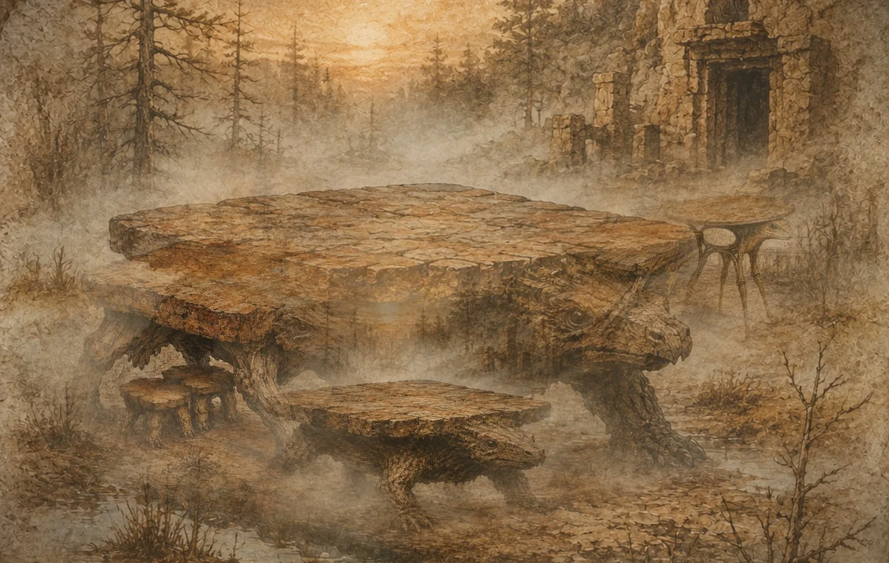

Warmblütige Möbel
Der wilde Tisch ist kein launisch bewegtes Objekt: Er ist ein soziales, vorsichtiges, lernfähiges Wesen, dessen Beine auf Erschütterungen des Bodens reagieren.
An den Rändern der Täler, in warmen Höhlen und unter den Schwarzkiefernwäldern leben Wesen, die man für unbeweglich hielt. Sie grasen, wandern, tarnen sich und wachen über ihre kleinen Hocker.
Die 9 Arten entdecken
Der wilde Tisch ist kein launisch bewegtes Objekt: Er ist ein soziales, vorsichtiges, lernfähiges Wesen, dessen Beine auf Erschütterungen des Bodens reagieren.
Naturforscher nähern sich einer Kolonie nie bei Sonnenaufgang. Dann entfalten die Tische ihre Ecken und verwechseln ein Kamerastativ mit einem Rivalen.
Alte Erzählungen behaupten, eine Planke sei bei einem Magnetsturm vom Himmel gefallen. Wo sie den Boden berührte, öffnete der erste Tisch die Augen.
Diese Seite versammelt Expeditionsnotizen, Artensteckbriefe und historische Hypothesen über die Populationen lebender Tische. Der Ton bleibt bewusst nüchtern: Ihre Silhouette mag ein Lächeln wecken, doch ihre Welt folgt erstaunlich präzisen Regeln.
Man findet sie in Kalkschluchten, auf trockenen Hochebenen, an eisenhaltigen Flüssen und manchmal in den Ruinen verlassener Esszimmer.
„Wenn ein wilder Tisch innehält, gibt er das Leben nicht auf. Er hört dem Boden zu.“ — Feldtagebuch, Tal der Tücher